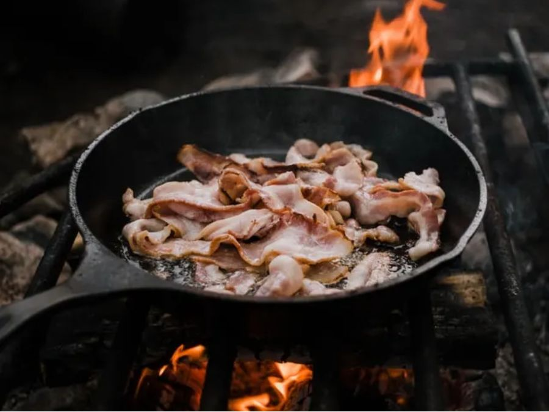
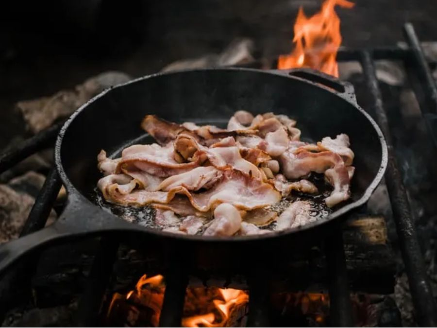

Welcome to Meadow Pathways Cornwall 🌿
Meadow Pathways reconnects children with learning through trauma-informed, bespoke education and wellbeing support across Cornwall. Reconnecting children with learning and life. Supporting individual growth through nurturing and understanding practices. We help children thrive through tailored trauma-informed educational approaches. 🌿✨
At Meadow Pathways, we recognise every young person is unique. We commit to working collaboratively with families, schools and partners to find meaningful, sustainable routes to success for each learner.


 



Our Approach
Our approach blends therapeutic practice and curriculum-linked activities to create meaningful learning opportunities. 🎨🍳🌲
We work relationally, using trauma-informed practice and creative, curriculum-linked activities. Our work is guided by Safety, Playfulness, Acceptance, Curiosity, and Empathy.
🌟 Meeting learners where they are.
At Meadow Pathways we recognise that every young person is unique. We are committed to working collaboratively with families, schools, and partner organisations to find the most meaningful and sustainable route to success for each learner. Whether a child is facing barriers to education due to emotional barriers, past trauma, or unmet needs, our role is to meet them where they are and help them move forward with confidence.
Person-Centred Commitment
We work closely with families, schools and partners to create meaningful, sustainable routes to success tailored to each learner’s needs and strengths.
Practical Learning in Community Settings
We deliver curriculum-linked, hands-on activities, bush craft, cooking, outdoor fitness, gardening, and project work, so learners build skills, resilience, and positive relationships while working towards accredited outcomes. 🧠🌲🍳
Our Values 🌿✨
- 💪🌱 Resilience & Independence — nurture confidence, self‑belief, and growth through challenge.
- 💪🧘‍♀️ Health & Wellbeing — prioritise emotional safety, regulation, and holistic care.
- 🔠Honesty & Integrity — build trust through transparency, consistency, and ethical practice.
- 🤗 Friendship & Kindness — foster connection, empathy, and belonging.
What We Offer 🎯
- Mentoring and Advocacy — 🧑‍🤝‍🧑 Building trust and self-belief through consistent relational support and Alternative Provisions.
- Tailored Learning Packages — 📚 Flexible academic pathways matched to each learner’s pace and interests.
- Life Skills — 🛠Practical preparation for adulthood including functional skills and community engagement.
- Diagnostic Assessments — 🧮 Literacy and numeracy profiling to inform targeted intervention.
- SEMH Interventions — 🧠Trauma-informed strategies to support emotional regulation and resilience.
- Wellbeing & PSHE — 🨠Creative therapeutic sessions promoting self-awareness, relationships, and personal growth.
- Transitional Services — 🔄 Carefully planned reintegration or onward pathways supported by multi-agency collaboration.
- Therapeutic & Curriculum Activities — 🧠Nature-based bush craft, walking, fitness, water-based activities, fishing, climbing, cooking, play, biking and more linked to ASDAN & AQA Unit Awards.
Next Steps
If you’d like to explore Meadow Pathways for a child or young person, check out our:
- 📠Referral Form
- ℹ️ About Us
- ☎️ Contact
- 🔠EOTAS Provision
If your enquiry is urgent or a safeguarding concern, please contact statutory services:
☎️ 01872 324605 — earlyhelphub@cornwall.gov.uk
Then call the Meadow Pathways team directly via the Contact tab.
Connect & Stay Updated
Scan our QR codes for Facebook and Crowdfunder:


📄 Download our Values
🤩 Planning Submitted for our first site "Treverno Meadows" — check out our Treverno page!